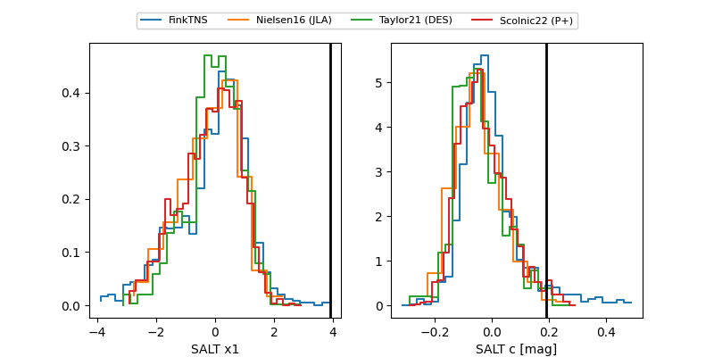

2025aipr
Target 2025aipr at 2025-12-28 13:01
Aliases and brokers:
FINK: fink-portal.org/ZTF25acioxsz
Lasair: lasair-ztf.lsst.ac.uk/objects/ZTF25acioxsz
ALeRCE: alerce.online/object/ZTF25acioxsz
TNS: wis-tns.org/object/2025aipr
YSE: ziggy.ucolick.org/yse/transient_detail/2025aipr
alt names
ZTF25acioxsz (ztf,fink_ztf)
2025aipr (tns,yse)
Coordinates:
equatorial (ra, dec) = 207.9763,+15.06800
equatorial (HMS+DMS) = 13:51:54.32,+15:04:04.82
galactic (l, b) = (355.3641,+71.47589)
Flags:
Photometry:
last ztfr=20.08
1 ztfr detections
Lightcurve

Visibility


Additional plots
